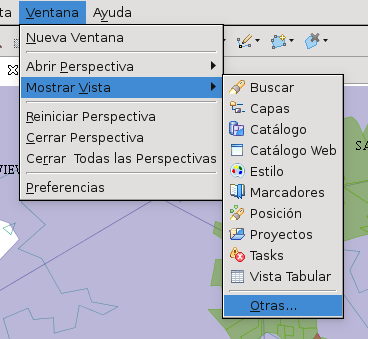
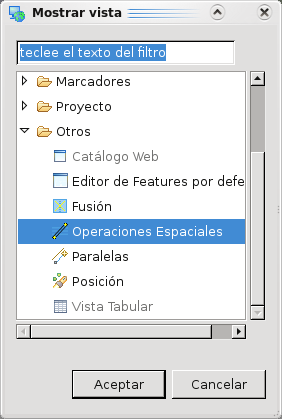
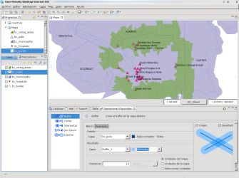

Operaciones Espaciales
Introducción
Esta es la página raiz de la documentación para usuarios de las extensiones Spatial Operations de uDig. Axios las provee bajo el proyecto Spatial Operations and Editing Tools promovido por la Diputación Foral de Gipuzkoa, Departamento de Movilidad y Ordenación del Territorio.
Estas extensiones integran un grupo de Operaciones Espaciales, donde cada una de ellas trabaja sobre los features de una o más capas de entrada y generalmente componen una nueva con los features resultantes de aplicar la Operación Espacial específica.
| Para activar la vista de Operaciones Espaciales, ir a Ventana->Mostrar Vista->Otras como se muestra en la Figura 1. |
Aparecerá el diálogo de Mostrar vista, seleccionar el item Operaciones Espaciales del árbol de vistas como se muestra en la Figura 2 y presionar Aceptar |
|  |
 |
| Figura 1. Abrir otras vistas |
Figura 2. Abrir vista de Operaciones Espaciales |
Una vez le haya dicho a uDig que abra la vista de Operaciones Espaciales, ésta se mostrará como en la Figura 3.

Figura 3. Vista de Operaciones Espaciales
 |
Recordar que las Vistas en uDig, como en la mayoría de las aplicaciones basadas en RCP, son muy flexibles. Si la distribución estándar no te parece apropiada, prueba a cambiar su posición arrastrando la barra de título, declarándola como Vista rápida para que sólo se muestre cuando sea necesaria, o como vista por Separado para que se comporte como un diálogo. |
Operaciones Espaciales
Comprobar los siguientes enlaces para cada una de las extensiones disponibles en los que se pueden encontrar documentación específica para usuarios.
- Operación Agujerear — Crea un agujero en el interior de un poligono utilizando un feature lineString.
- Operación Buffer — Calcula un área buffer alrededor de las geometrías seleccionadas.
- Operación Cortar — Calcula la diferencia geométrica entre dos Capas
- Operación Disolver — Crea una nueva capa que contenga los Features agrupados y fusionados por la Propiedad seleccionada.
- Operación Dividir — Divide la capa polígono utilizando una capa tipo LineString
- Operación Intersectar — Calcula la intersección geométrica entre dos capas
- Operación Join Geom — Crea una nueva capa que contiene los features de la segunda capa que coincidan con la relación espacial indicada
- Operación Polygon to Line — Transforma una capa polígono en una capa de tipo lineString.
- Operación Rellenar — Crea un nuevo feature utilizando el borde del polígono de una capa y la linea de la otra capa.
(c) Copyright (c) 2004-2008 Refractions Research Inc. and others.
{kind=link}